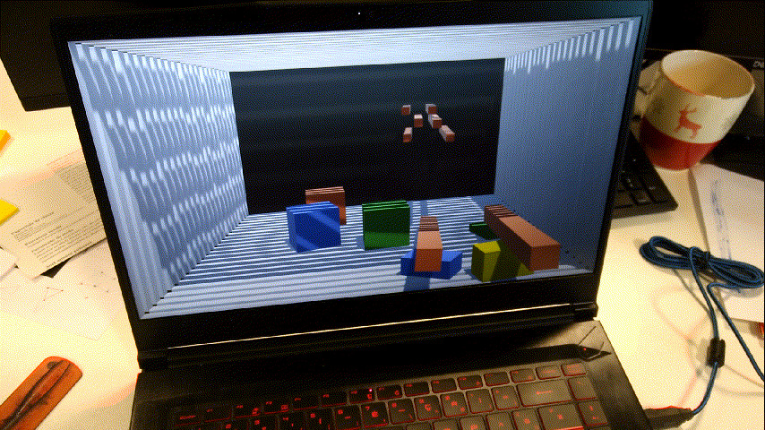
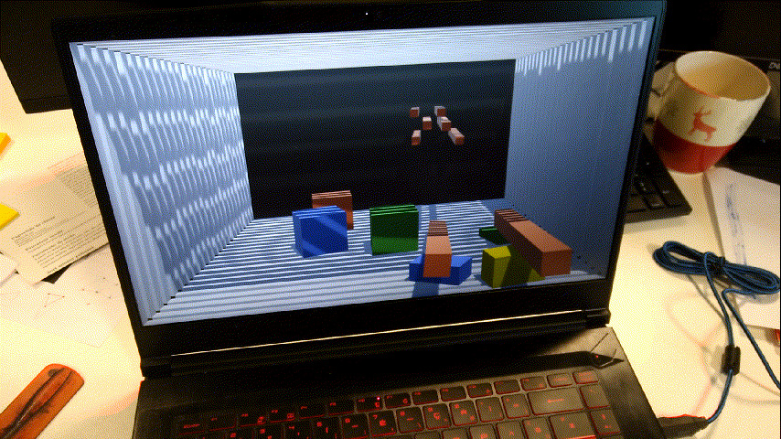

Parallax
Ce prototype montre qu'il est possible d'obtenir un effet 3D en changeant le point de vue de la caméra selon la position des yeux d'une personne devant l'écran. Nous l'avons réalisé en binôme dans le cadre du master Gamagora.
Le prototype est composé de deux scènes : une simple démonstration comprenant des objets à différentes distances, dont certains qui "sortent" de l'écran, et une scène mini-jeu. Dans le mini-jeu, le joueur doit faire varier son point de vue pour aligner certains objets et former des lettres pour découvrir le mot caché (voir vidéo plus bas).
 

Un gif vaut mieux qu'un long discours
La partie technique
Le parallaxe est l'effet du changement de position de l'observateur sur ce qu'il perçoit. En d'autres termes, les objets qui sont au loin se déplacent plus vite que les objets proches. C'est un des effets qui nous permet de percevoir la 3D. Avec la stéréoscopie (les deux yeux voient une image légerement décalée), ce sont les seuls effets manquant à un écran plat pour imiter la 3D du monde réel.
Dans ce protoype, la caméra dans Unity a un frustum bien particulier permettant d'avoir toujours la même zone en visuel. En déplaçant le point de vue en même temps que le visage de la personne devant l'écran, on obtient un effet assez convaincant de parallaxe. Pour la détection et le tracking du visage, nous avons utilisé la bibliothèque EmguCV, un wrapper d'OpenCV pour le C#, et un classificateur cascade. Pour filmer une démonstration, il a suffit de remplacer le face-tracking par un tracking se basant sur la couleur de mon téléphone portable.